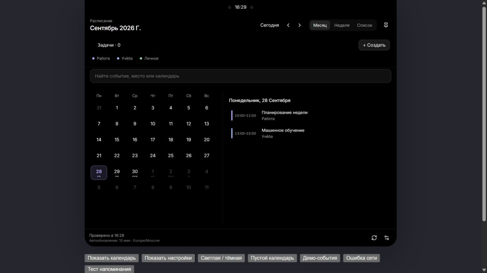
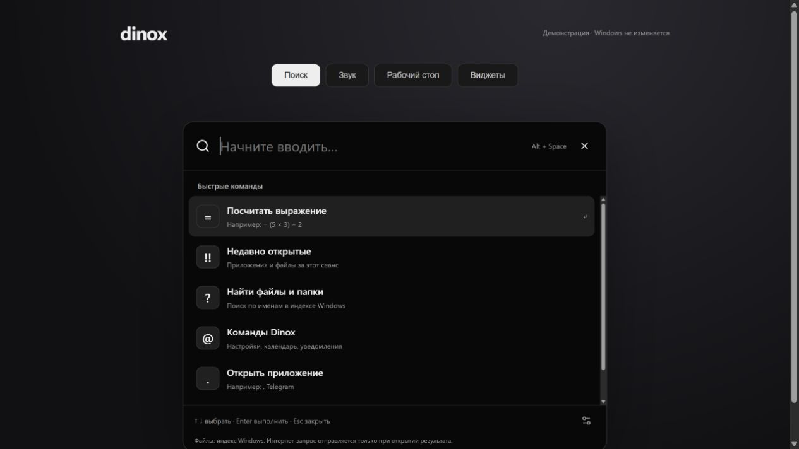
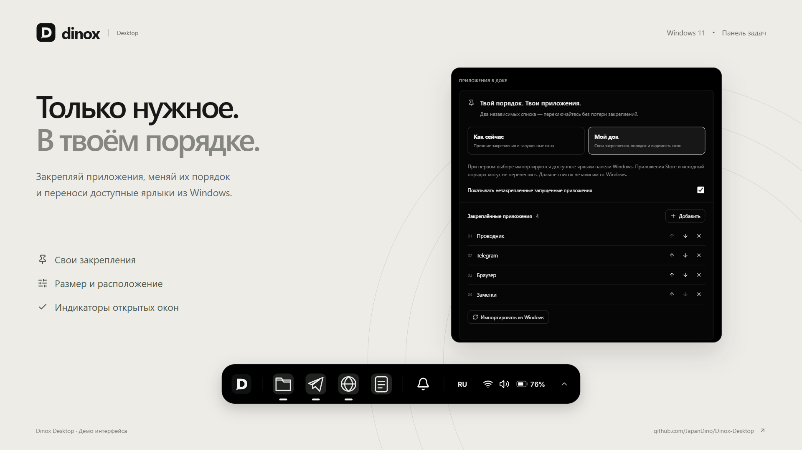

Одна строка. Много ответов.
Приложения, файлы из индекса Windows, калькулятор и поиск в интернете. Сочетание клавиш выбираете вы; Dinox предупредит, если оно занято.
Ctrl+Alt+…Ваше сочетание
Календарь, приложения и мысли —
рядом, когда они нужны.
Dinox объединяет док, верхнюю панель, поиск и виджеты в одном настраиваемом пространстве.
Скачать для WindowsWindows 11 · x64 · бесплатно · открытый код


Месяц, неделя и ближайшие встречи — в одном месте.
Снимки демоверсии · данные приведены для примера
МЕНЬШЕ ПЕРЕКЛЮЧЕНИЙ
Встреча через полчаса, нужный файл, внезапная идея.
Пусть всё это будет под рукой.
Закрепляйте приложения в доке, меняйте его размер и расположение. Добавьте дату и показатели компьютера рядом со временем или оставьте только часы.

Приложения, файлы из индекса Windows, калькулятор и поиск в интернете. Сочетание клавиш выбираете вы; Dinox предупредит, если оно занято.
Заметки с форматированием, списками и изображениями. Полупрозрачная панель виджетов собирает задачи, проекты и фокус-таймер поверх ваших окон.
Локальное хранение · без отдельного аккаунтаУправляйте громкостью программ по отдельности, выключайте лишнее и выбирайте устройство вывода в общем микшере.
В едином оформлении DinoxСОБЕРИТЕ СВОЙ ДЕНЬ
Месяц для общей картины, неделя для расписания,
список для ближайших дел.
Подключите аккаунт через браузер. Смотрите календари, создавайте события и задачи, отмечайте выполненное в Dinox.
Бесплатный пилот до 100 пользователей. Google показывает предупреждение о непроверенном приложении. У задач Google доступна дата, но не точное время.
Как подключить ↗Добавьте ссылку ICS — события появятся в общей сетке и будут обновляться по выбранному интервалу.
Подписки ICS работают на чтение. Создание записей в Яндексе через Dinox пока недоступно. Задачи появятся только в том случае, если сервис включает их в свой экспорт.
О событиях и задачах ↗ПЕРЕД УСТАНОВКОЙ
Проект развивается открыто.
Вот что полезно знать заранее.
Dinox добавляет свои панели поверх рабочего стола. Замену панели задач можно включить отдельно. Ctrl + Alt + B возвращает штатную панель Windows; некоторые системные действия используют интерфейс Windows.
Dinox бесплатен, исходники открыты по GPL-3.0. Для локальных функций аккаунт не нужен. Google подключается только по вашему желанию; публичный пилот ограничен 100 пользователями.
Нагрузка зависит от компьютера и включённых функций. Есть настройки производительности; можно отключить ненужные индикаторы и анимации. Репрезентативных замеров времени работы от батареи пока нет — фиксированный процент расхода мы не обещаем.
Dinox читает уведомления, которые приложения передают Windows. Нужны идентификация пакета и разрешение Windows; одного EXE-установщика недостаточно. Собственные всплывающие окна Telegram не передаются этому механизму. Аватары доступны, только если их отдаёт приложение.
Dinox проверяет релизы на GitHub и предлагает установить новую версию. Автоустановка при запуске включается отдельно. Подлинность пакета проверяется ключом обновления; это не подпись издателя Windows.
Заметки и настройки хранятся локально. Запросы календарей идут к выбранному провайдеру, без сервера-посредника Dinox. Токены Google защищены средствами Windows. Подробнее — в политике конфиденциальности.
ВАШ СЛЕДУЮЩИЙ РАБОЧИЙ СТОЛ
Начните с малого. Остальное настройте под себя.
Скачать Dinox 4.2.0Windows 11 x64 · установщик EXE · ранний открытый релиз
Все изменения и файлы релиза ↗